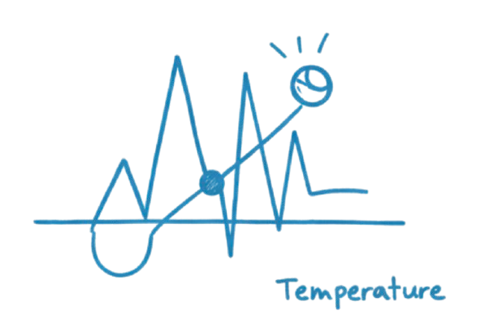
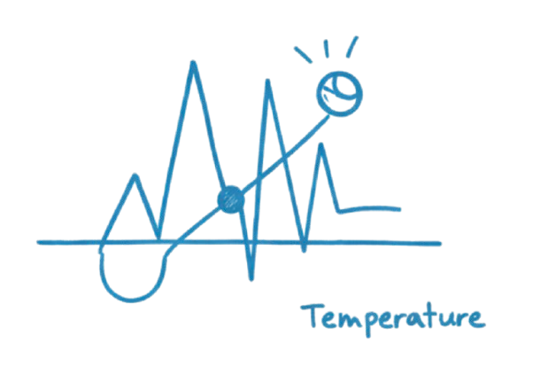

For the past year, I've been diving deep into machine learning, and it's been one of the most challenging yet rewarding experiences of my technical career. This post is a reflection on what I've learned, the mistakes I made, and the resources that helped me along the way.
Why Machine Learning?
My interest in ML started during my work on the DolphinGemma project at Georgia Tech. We were processing thousands of bioacoustic audio samples, and I realized that traditional algorithms weren't cutting it. We needed something smarter—something that could learn patterns we couldn't explicitly program.
That realization led me down a rabbit hole of neural networks, gradient descent, and backpropagation. At first, it was overwhelming. But as I started building small projects and seeing them work, I was hooked.
The Learning Path
I started with Andrew Ng's Machine Learning course on Coursera. It's a classic for a reason—the fundamentals are explained clearly, and the math isn't too intimidating if you have a decent calculus background.
After that, I moved to more practical implementations. I built:
A digit classifier using the MNIST dataset (the "Hello World" of ML)
A sentiment analyzer for movie reviews
A simple image recognition system using CNNs
Each project taught me something new about data preprocessing, model selection, and hyperparameter tuning.
Key Lessons
1. Data is everything
You can have the best model architecture in the world, but if your data is dirty or biased, your results will be too. I spent more time cleaning and preprocessing data than I did building models.
2. Start simple
My first instinct was always to reach for the most complex model. But I learned that starting with a simple baseline (like logistic regression) helps you understand your data better and gives you a benchmark to beat.
3. Understanding the math matters
Early on, I tried to skip the math and just use libraries like TensorFlow and PyTorch. That worked until something broke. Understanding backpropagation and gradient descent made debugging so much easier.
Tools I Use
Here's my current ML toolkit:
Python 3.10
TensorFlow / Keras
PyTorch (for research projects)
NumPy & Pandas
Jupyter Notebooks
Google Colab (for GPU access)What's Next
I'm currently exploring reinforcement learning and generative AI. The field moves incredibly fast, and there's always something new to learn. My advice to anyone starting out: don't try to learn everything at once. Pick a project that excites you, and learn what you need to build it.
Machine learning isn't magic—it's math, statistics, and a lot of trial and error. But when you finally get that model working and see it make accurate predictions, it feels like magic.